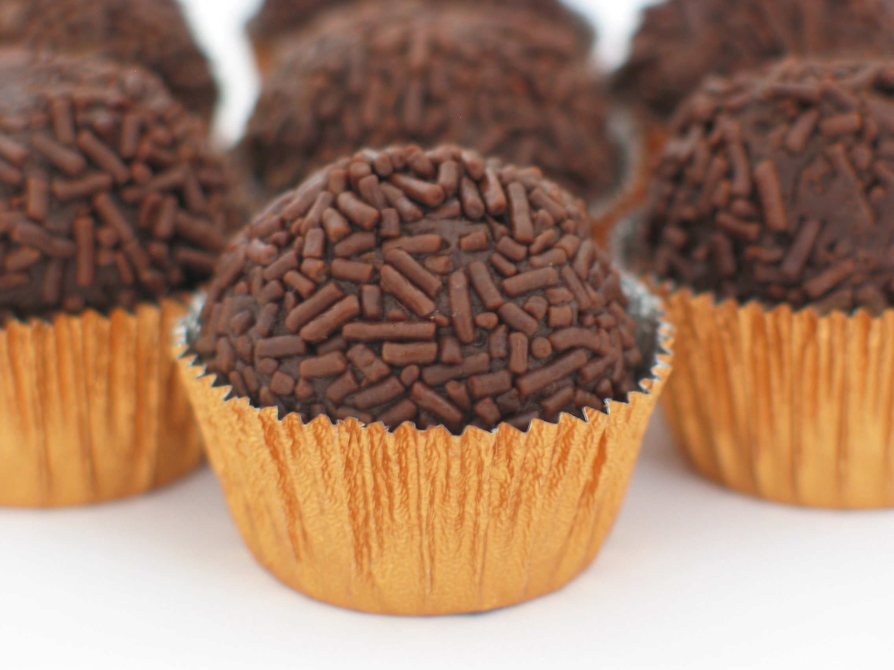
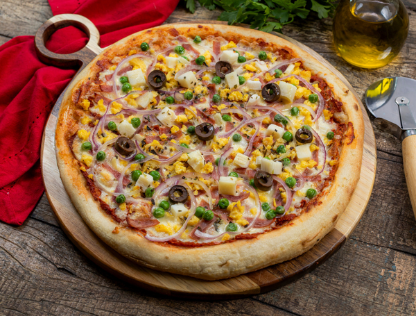

Meu primeira receita
Por: Marcelo Paludetto
Sejam bem-vindos ao meu blog! Aqui vocês encontrarão receitas deliciosas, dicas de cozinha, sobremesas e pratos especiais para prepaparar em casa.
Vou compartilhar receitas deliciosas, dicas e curiosidades sobre culinária.
Por: Marcelo Paludetto
Sejam bem-vindos ao meu blog! Aqui vocês encontrarão receitas deliciosas, dicas de cozinha, sobremesas e pratos especiais para prepaparar em casa.

Por: Marcelo Paludetto
O brigadeiro é um doce tradiconal brasieiro, feito com leite condensado, chocolate em pó e manteiga. É perfeito para qualquer ocasião

Por: Giulliana Cestari
A pizza é uma das comidas mais queridas do mundo! Para prepará-la, você pode utilizar massa, molho de tomate, queijo e os recheios da sua preferência,
Fonte: Receita de pizza caseira

Por: Giulliana Cestari
O café é a bebida favorita para começar o dia com energia. Para extrair o melhor sabor do pó, use água filtrada quente (sem deixar ferver totalmente) e escalde o filtro de papel antes de coar.
Fonte: TudoGostoso
Por: Giulliana Cestari
Seja para o café da manhã no estilo americano ou recheada no almoço, a panqueca é super versátil. Basta bater leite, ovos, farinha de trigo e uma pitada de sal ou açúcar até obter uma massa lisa e dourar na frigideira.
Fonte: TudoGostoso
Por: Giulliana Cestari
Nada supera o cheiro de pão assando em casa. O segredo para uma massa bem fofa é sovar com paciência e respeitar o tempo de descanso para que o fermento biológico faça o pão crescer antes de ir ao forno.
Fonte: TudoGostoso
Por: Felipe Gibertoni
Saber armazenar cada ingrediente faz toda a diferença para evitar o desperdício e manter o sabor das suas receitas. Folhas verdes duram muito mais quando lavadas, bem secas e guardadas em potes fechados com papel-toalha.
Já alimentos como batatas, cebolas e tomates preferem locais frescos e arejados fora da geladeira para não perderem a textura original.
E você, qual dica de conservação mais usa na sua cozinha?
Fonte: Panelinha